The book he wrote
The Greek wrote the second volume of this history and put his pen down at Rome in the sixth month of 893, and then he came and found me behind the baggage with my hands in the forge and told me to take it up, and I said no.
I said no for a year and a half. I want that written down, because the Greek will not write it in anything of his, and because a smith does not take a pen the way a clerk takes one. She takes it slowly, with her hands scrubbed, and with the strong suspicion that the whole trade is counting, and that counting is the one thing she has been doing since she was nine years old.
What decided it in the end was that the Greek was frightened, and I do not mean as a figure of speech. He had written the last page of his volume and then he had begun sitting up at night with the roll open, and once I came on him in the lamp-light reading the names of the dead of 887 against a list of horses, as though the horses might account for them.
I said: you have written eleven years and you are tired, and he said: I have written eleven years and I know what is coming, and I would rather it were written by somebody who does not.
So it is mine. The third volume of this history is in the hand of the smith of the company, and the Greek keeps one page of it because there is a thing in these years that only a clerk can explain, and because a man should not be allowed to put down a book and walk away from it entirely.
I will say what my qualifications are, since I have read the Greek's and found them thin. I am Matako, of the company since the tenth month of 879. I shoe the horses and I mend the mail and I keep the tally of what the iron costs, and I have been in every camp of this company for fourteen years, and I have buried more of it than any priest. I cannot read Latin and I do not intend to learn now. I can read a muster roll, a bill of lading, and a man's face, and in that order of difficulty.
That is the hand this volume is in. It is a smith's hand and it will be plain.
The last months in Rome were the best months the Captain ever had, and I say that knowing what they cost, because in the ninth month of that year a woman died in irons behind a column of our own making, and I will come to her, and I will not put her off.
Rome first. The record for this year is a list of small domestic things, which is what the record looks like when nothing is being killed. On the eighteenth day of the sixth month Germano had a hangover. On the twenty-fifth he came into Ugolino's class drunk and was put out of it. On the second day of the seventh month he came into Tarasiy's class drunk, and Tarasiy — who was teaching there, not merely sitting at the benches with us, which nobody in this company had understood until that morning — put him out of it himself, and then went on with the lesson.
I was not in either room. Germano told the story four times and the fourth telling is the one I wrote down, and the difference between the first and the fourth is the difference between a man who is ashamed and a man who has decided to be amusing instead, and I have watched a good many men make that exchange and it never costs them less than everything.
In the seventh month, on the twelfth day, the Captain wrote a book.
I will put it as plainly as the record puts it and no plainer. He wrote a book on theological matters based on notes he had taken while he was studying. It is his first. The record gives no title, and I am the one who has to give one or leave it, and I am going to leave it with the name it went out under, which was Nine Questions, because I cut the boards for it and I had to write something on the cover before the glue set.
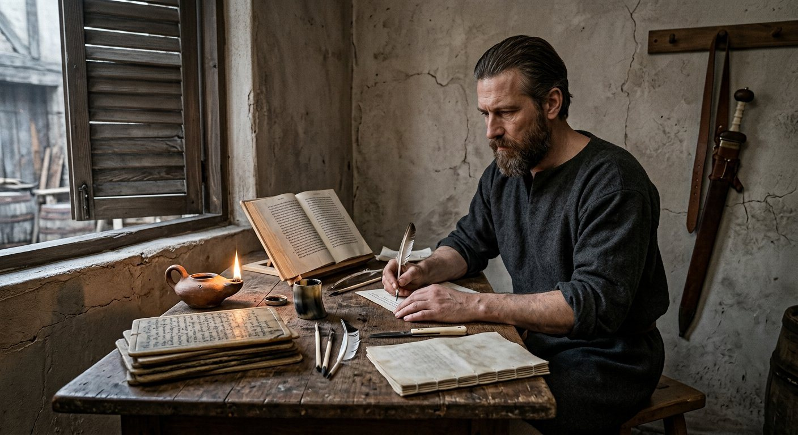
He wrote it at night, in a room over a cooper's yard, from the notes on the tablets and from the manuscripts he had been copying all spring, and he did it in the way he does everything, which is badly at first and completely in the end. Six weeks. He ruined his eyes a little and he stopped sleeping properly and he was, for that summer, happier than I have ever seen him.
I bound it. Two boards, alum-tawed leather over them, a linen spine, and I cut the boards too small by the width of my thumb and had to start again, which is in no chronicle anywhere and is going in this one. Fourteen years I have been making things for that company and it is the only thing I ever made for him that he did not pay for and did not have to be asked to keep.
I did not read it. I do not read Latin and the book was in Latin, because the men he meant to argue with were Latins, and it was copied twice in the autumn by a man in the Via Lata at his own expense, and Ugolino read it and said nothing, which from Ugolino is a full review.
I asked him what it was about and he said: the difference between what can be said about God and what can only be sung. And I said: and which is longer. And he said: the second one, and it took me four hundred pages to say so.
That is the whole content of the book as far as this history is concerned. Four hundred pages, and the argument is not given here, and is not going to be given here, because I did not read it and because a summary made by somebody who did not read a book is a worse thing than silence.
On the twenty-seventh day of the eighth month he aced another assignment in the school, and the record, which counts everything, counts that. Two years in Rome and the man had a book of his own, a school's praise twice over, and a friendship with a lord of Severin, and no land, and thirty regiments eating their way through a winter.
Men came to us in Rome. That is worth saying because it had not happened before: men came to the company, not to a contract, and rode a hundred miles to be at a muster they had only heard of.
László the Wolf came. Maróti, fifty years old, a Hungarian with a bad reputation in three kingdoms and the manners of a man who has decided that a bad reputation is cheaper than a good one. He came in the seventh month with two horses, no servant, and a story about a brother he had not killed and would not discuss.
And Stoyanka came, and Stoyanka was twelve years old.
She was from Silistra, born in the sixth month of 881, and she came into that camp on an evening in the seventh month with a bundle and a knife and asked for the smith. Not for the Captain. For the smith, by name, and she had my name off a man in a wine shop four hundred miles away, and she stood in front of me and said: I can mend.
She could. Her mother's trade was harness and her mother was dead and her father had sold the shop, and she had walked out of Silistra with a knife and a needle-case and a child's arithmetic that was better than mine.
I took her in. The Captain struck her on the roll in the eighth month, aged twelve, and there are men in that company who have never forgiven it and there are men who have never once mentioned it, and I know exactly which is which and it is not the division you would expect.
She slept in the wagon with the tools for two years. She is fifteen in this spring of 898 as I write and she runs the second forge and can price a horse's shoes in three currencies, and if the reader wants to know what the company thought of itself in these years, the answer is in the fact that nobody, in five years, suggested she go home.
The school ended on the second day of the ninth month. He was four months short of two years in it, and he went out of that gate with his notes in a satchel and stood in the road and looked at thirty regiments and did not say anything for a while, and then he said: the next thing will be a war of ours, and everyone standing near him laughed, because we had been hearing that for eleven years and it had always been somebody else's war.
It was ours. He was right, and I have never been sorrier to write a sentence down.
The woman in the irons
On the twenty-seventh day of the ninth month of 893, Ana died in captivity, aged thirty-seven.
I will put the rest of it as the record puts it, because I am the person in this company least likely to soften anything and I am not going to start with her.
She was taken on the twenty-seventh day of the seventh month of 891, the day Hippostrate was murdered, and she had been in our hands a little over two years. The record calls her death the death of a friend. I have read that line perhaps forty times and I have never worked out whether it is the game's courtesy or the truth, and I am not going to guess in a book.
Two things about her are in the record and neither is a story. The first is that there were two women called Ana in this company's affairs in those years, and this one was the elder, and she was our prisoner, and the other one is alive in the camp to this day and teaches Tokifusa.
The second is that among her listed qualities the record sets down one word, and the word is Murderer.
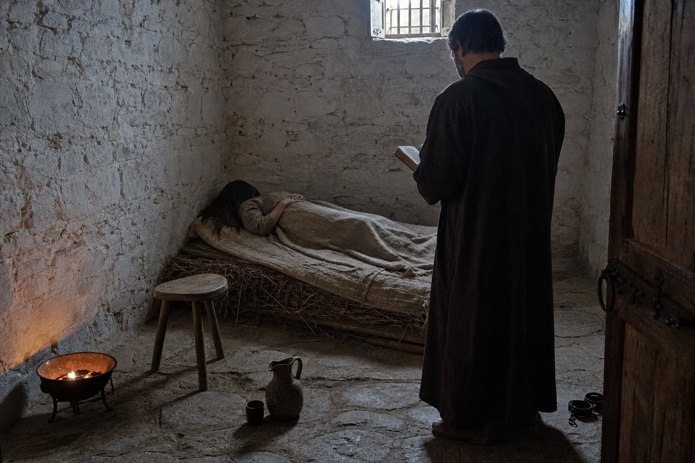
I am the one who has to decide what to do with that word, and I have decided to print it, and to print nothing else.
The record does not say that she killed Hippostrate. It does not say whom she killed, or when, or whether the word came to her before that night in the tent or after it. A word in a list is not a sentence in a court. But the captain of this company was told, in the ninth month of 893, that the woman he had held for two years, and who was a friend to him in the way the record counts friendship, had that word against her name, and he had the whole of the murder of 891 in his hands and no other answer to it, and I am not going to pretend he did not notice.
What he did was this. He took the roll to his tent and he read the entry twice — I saw the tent and the lamp and I know how long it burned — and in the morning he gave the sheet to the clerk and said: copy it as it stands.
Not one word more. Not one word less. He never spoke of it to me, and I never asked, and I have been in that company fourteen years and there are perhaps four subjects we have never once discussed and that is the first of them.
I will say the other thing, because the record will not and somebody must. She was in our keeping for two years. Our keeping was a tent, then a room in a farmhouse below Visegrad, then a room in winter quarters outside Rome with a brazier and a woman of ours outside the door, and I mended the brazier twice and I know exactly what kind of keeping it was, and it was better than the keeping of 879 and worse than nothing at all.
The record does not say how she died. I was not the one who found her, and the woman who did has never spoken about it to anyone that I know of, and I am not going to invent a deathbed for a woman who did not get one.
So: on the twenty-seventh day of the ninth month of 893, in winter quarters east of Rome, at the age of thirty-seven, the prisoner Ana died. She had a name that two women shared and a word against it. She was buried by our priest in a field that was not ours, with the office said over her, because the Captain gave the order and the order was not argued with.
I went. There were nine of us there and I know the nine, and Yehudis said the office and did it properly, and when it was done the Captain walked back to the camp alone and did not come out of his tent that day.
That is the whole of what I will write about her, and it is more than I expected to be able to write.
Golden sovereign
In the tenth month of that year the company went to the Adriatic coast, and the record says a thing about that year which I have been waiting eleven years to write in a plain sentence: he became rich.
It says it in the game's own words. The quality he had carried since the nineties, Midas Touched, was replaced in the tenth month of 893 by one that means the same thing and means it harder, and the clerks of the record call it Golden Sovereign. Two thousand six hundred and twenty-two gold in the sixth month of 893. Four thousand three hundred and ninety-one by the fourth month of 898. There is no battle in this volume that made him that money. It came in fees, in the sale of horses he had not needed, in the difference between what a war cost and what a war was charged at, and in fourteen years of a trade that he has understood since the day he entered it and that the rest of us have only learned by watching him.
I keep the tally. I have been keeping it since 884, when the company's accounts came to me because I was the only person who could do sums and be trusted not to lie in the column that flattered me. I want to say what four thousand gold looks like, because nobody who reads this will have seen it.
It looks like a chest you cannot lift. It looks like two men and a mule for a day's march and a third man to watch the two men. It looks like sixty horses that are not horses, because the horses are the cheap part, and the harness and the keep are the expensive part, and every one of those sixty has to be fed in a season when the grass is under snow.
It looks, mostly, like being able to say no.
That is the thing I have watched change in him and it changed in exactly this year, and it changed without any single event to mark it. In 883 he took contracts because the company had to eat in the spring. In 893 he had begun to take them or not take them, and the not taking was new, and by 896 there were wars he simply did not go to, and the world did not end when he did not go to them.
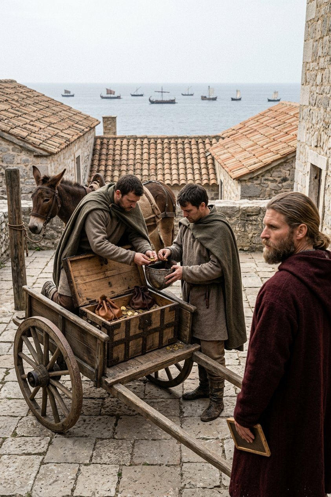
We wintered at Visoki, in the tenth month, and then at Naissos for the twelfth. It rained from the tenth month to the third without a proper stop, and I mended more mail that winter than in the three before it, because men sit still in the rain and the rust gets in and a wet mail shirt is a shirt that is coming apart whether or not anyone has hit it.
Chrabroš joined at Visoki on the last day of the tenth month. Tunavský, born in 848, married, two small children, and he came without them and never sent for them, and I asked him once and he said they were better where they were, and he was probably right, and it is the only answer to that question that anybody in this company has ever given me which did not turn out to be a lie.
The news from the north that winter was all other men's. Konrád, who had been losing Csongrad to Luboš since the seventeenth day of the twelfth month of 892, beat a Luboš ally at Nagylak in the eleventh month — beaten by a man who was not us, in a war we had contracted for, while our regiments sat in the rain at Naissos and did nothing about it.
I want the reader to feel how strange that is. We had been paid for that war. It had been running for a year. And the record's next line about it is not a battle but a ledger: in the third month of 894, Csongrad was Luboš's.
That is how a war ends when a company has done its part and gone home. Not with a field. With a line in somebody's book, a year later, in another country, read out by a man on a mule.
Other men's parchment
We were on the road again in the third month of 894, going west and north into the old country, and the company came to Calafat on the twenty-fourth day of that month.
Calafat is where the Greek's first volume ended. He has written about it and I will not write it again; the reader who wants the river and the ferry and the men standing at the rail of the second volume's last page can go and read them. What I will write is that eleven years is a long time to be away from a place, and the company went through it in a day and a half without stopping, and half the men in the column had never heard of it and did not know why the Captain turned his horse off the road and sat for a quarter of an hour looking at a landing stage.
Svetozar joined us at Fehér on the way, in the third month. Volhynsky, born 878, sixteen years old and the height of a grown man, with a bow his father had made and a bad temper he had brought himself.
And in the fourth month we were in Severin.
Severin is Tarasiy's county. It was Tarasiy's in 881, when this company fought two afternoons for it and won it for him, and it stopped being Tarasiy's in the fifth month of 882, when Domoszló took it while we were on pilgrimage in Rome and could not be got back. Eleven years. The friendship of the sixth month of 893 was made in a garden in Rome between a captain with no county and a lord with no county, and both of them knew exactly which county they were not talking about.
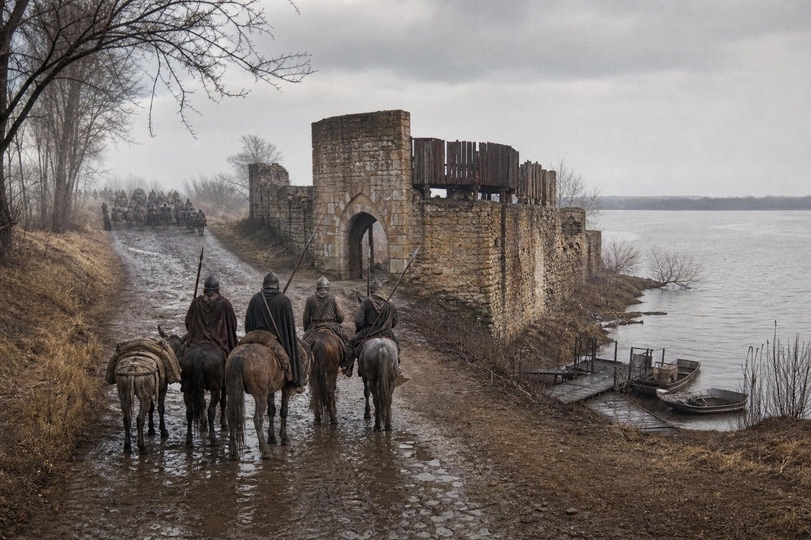
The record shows the stop, and only the stop. It does not say what he did in Severin, or whether he saw Tarasiy, or whether anybody in that town knew who he was or cared.
I was there. I will write what I saw and nothing else, and the reader may make of it what he likes.
He rode in with the advance, in the morning, and the company was not to come into the town — a company of that size does not go into a town unless it is being paid to — and he went up to the castle gate with four men and stood in the road in front of it for a while.
It is a bad gate. It was a bad gate in 882 and it was a worse one in 894, because stone does not improve when nobody is paying for it, and the wall on the river side had a crack in it you could put a fist in.
Then he came back down and we went on, and he said one thing about it that evening, which was: it is eleven years and I could take that town in an afternoon and I have no reason on earth to.
And I said: you could take it for him.
And he said: with what? A county is a thing a king gives or a bishop signs. You cannot give a man a county out of a chest of gold and a company. That is the whole of what thirteen years has taught me, and it has taken me thirteen years.
I have thought about that answer for four years. He was wrong. It took me until 896 to work out how wrong, and by then the answer had a war in it, and I will get to the war.
In the sixth month of 894, on the fourth day, the cat died.
I am putting that in its own paragraph, with a date, because the record puts it in its own line with a date, and because that is the only prior mention of the animal in fourteen years of record: one line, no name, no history, a death.
He had a cat. Nobody in the company knew for certain how long, though Gerasimos says it came aboard at Constantinople in 883 and Gerasimos has been wrong about fewer things than anyone else in this book. It lived in the wagons, it was not friendly, and it had a way of sitting on the strongbox in the evening that made every man in the camp who wanted to be paid feel personally obstructed.
The Captain buried it himself, in the dark, at the edge of a camp near the Danube, and did not say anything to anyone about it, and by the morning he had declared a war.
The declaration
On the fifteenth day of the sixth month of 894, Edouinos Silviades declared a war of liberation against Adelina, who holds Muntenia.
I want to set out who she is before I set out what he did, because the record is a list of names and the names run in families and a reader who does not keep them straight will think this war came out of nowhere. It did not. It came out of eleven years.
Adelina was born in 859. She is the daughter of Tepes — the duke whose throne this company saved at Vidin in 884, the same man this company fought and broke at Vidin in 887, the same man who died at Shumen in the second month of 890 in a king's victory in a war we were not in. She is married to Gavril, the younger, born 848, the man this company fought for Bajan at Tarnovgrad and Orșova in 887 and who was an ally of ours by 890 and an enemy again by 895. Her country is Muntenia, and Muntenia is the country we had been living in and marching over and wintering in for six years: Giurgiu, Turnu, Tabla Buțbii, all of it hers.
So: the daughter of one man we made and broke, married to another man we made and broke, ruling the ground the company stood on.
The record calls the war the Liberty War. Its stated object is a liberty faction: the vassals of Muntenia, in arms against their own ruler, and a captain with two thousand men hired to make their cause stand up.
Who those vassals were is not in the record. I have looked, and Chrysogonos has looked, and the guild of clerks in that company looked, and there is no list of names. So I will not invent one, and I will not name a claimant, and I will not make him one, because he was not: he did not claim Muntenia for himself, and he never held an acre of it, and by the last page of this book he still does not.
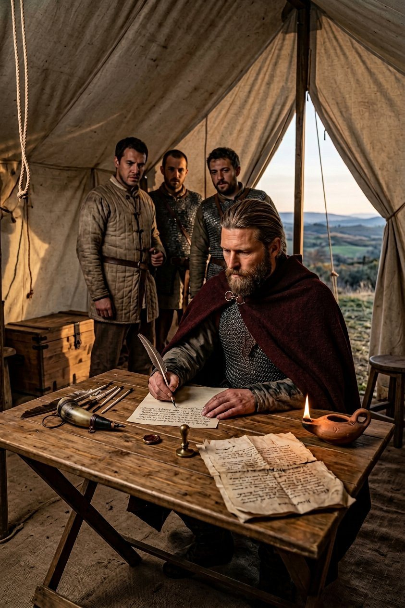
I will write what I saw instead, which is a table in a tent on the fifteenth day of the sixth month of 894, and a man signing a sheet he had made somebody else draw up.
He had been at it for a month. That is the part nobody outside the company ever saw and it is the part I want in this book. He was not a hot-headed man in his forties — he had been cold-headed in his twenties and he was colder now — and a war of his own was not something he did on an evening because the ground was good. He had the faction's complaints copied out. He had the law of it read to him twice, once by a clerk and once by a priest who disliked him. He wrote to three men who owed him money and one who owed him nothing, and got two answers, one of which was a refusal.
And then he sat in a tent in the sixth month and put his own name at the head of a war, as the declarer, which no captain of a free company in the record of this century has done, and which changed what this company was in a way that no battle in these five years changed it.
The distinction I am making is the whole point of the volume and I am going to make it slowly.
For fourteen years this company had been hired. Somebody else had a claim, a county, a cousin, a grudge, a bishop's parchment; somebody else paid; the company went; the claim was settled or it was not; the company came home and was paid. In all that time, not one of the wars had a single line of it that could be read out and had our Captain's name at the top.
At Turnu, in the seventh month, the record has a battle in which two thousand three hundred and sixty-one of ours fought one thousand four hundred and one of hers, and all of hers were lost and ten of ours. That was the company doing what it does.
But the war was not the battle. The war was the sheet. A company can win a battle and lose the war it was hired for — this book has said so twice already and it is true — and a man who writes the sheet cannot lose the war in that way, because the war is not somebody else's any more. It is his, and if it fails it fails in his name, and the reason nobody in that trade does this is that a mercenary captain's whole value is that failure lands on somebody else.
He did it anyway, and I asked him why, on the road, in the way I ask him things. I said: every man in this camp will follow you for pay and most of them would follow you for nothing, and none of them asked you for Muntenia.
And he said: nobody asked me for Muntenia.
And I said: then why.
And he said: because in fourteen years nobody has ever asked me for anything. They have bought me. When a man buys a horse he does not ask the horse what it wants. These people came and asked, and they asked me, and I have been waiting fourteen years to be asked.
I wrote it down in the margin of a bill of lading that night because I did not have paper. I still have the bill of lading.
Turnu
The battle was in the seventh month of 894, at Turnu, on the river.
Two thousand three hundred and sixty-one of ours. One thousand four hundred and one of hers. All of hers were lost. Ten of ours.
Ten is the number I have to write about, and I am going to do it the way the company does it, which is with the muster roll.
Ten men. I knew eight of them by name and I had shod the horses of six. In all the actions of this company's fifteen campaigns it had never lost ten men in one afternoon except at Branicevo in 889, and at Ploiești the whole butcher's bill was two. Ten men in one afternoon is a bad day, and it was not the worst day of that year, and the worst day of that year was not a battle at all.
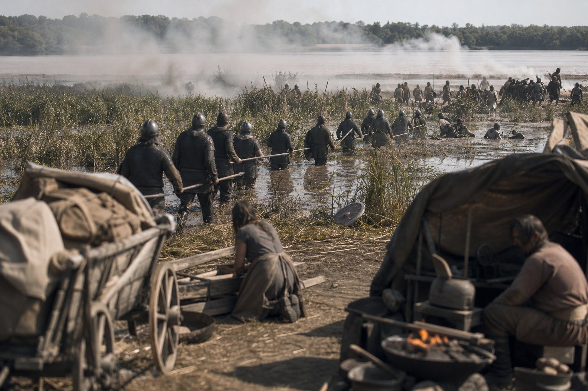
I was at the Forge two hundred paces behind the line, which is where I always am, and which is the only place in an action where a smith can do her work, and I will tell the reader what a battle looks like from there, because the Greek never did and because it is not what the paintings have.
You do not see it. You hear it and you get told it. Men come back to the wagons — walking, or carried, or dragged by two men who have stopped shouting — and each of them tells you a thing, and the things do not agree, and by the evening you have a hundred and forty accounts of an afternoon and none of them is the afternoon.
What I saw of Turnu was eleven men carried in and one of them dying, and a horse with its jaw broken that I killed myself with the poll of an axe, and a great deal of blood on the inside of a wagon where a man had been laid who should have been laid on the ground.
What I heard, from about thirty of them eventually, was this. Adelina's line was on the river bank with a marsh on their left and they had put their horse on the wrong side of the marsh. Our foot went through the water at the marsh end, which nobody had expected and which the Captain had spent two days looking at from a hill, and after that their line had a flank and could not turn it, and it came apart in the way a line comes apart, which is not dramatically. It goes backwards and then it goes sideways and then it is men running in water.
All of hers were lost. I want to be careful with that phrase because it is in the record forty times and it does not mean what a reader thinks. It means the army ceased to exist as an army: dead, taken, scattered, gone home. It does not mean one thousand four hundred and one men were killed, and this book has never said it did, and I am not going to start with the one battle that might make the company look best.
We took prisoners and sold the horses and got the fee, and the Liberty War went on, and Turnu was ours in the way that a battle is ever ours, which is that the next line on the parchment was written on our side of the river.
A year of other men's wars
I said that I would keep the tally and I am going to keep it, because these are the years where the tally is the story and it does not look like a story at all.
Here is what the company did between the eighth month of 894 and the fifth month of 895, which is nine months.
It took a contract from Lampert — the same Lampert we had made master of Visegrad in 892 — for the county of Hont, against a boy called Dobroslav, born 878, sixteen years old, with a claim and a household and a great deal of other people's money behind him. That was on the twenty-second day of the eighth month.
It took a contract from Sophia, the chieftess of Galați, who had hosted the tournament of 891 and given us the archery, against a peasant rising under a man called Milos. That was on the fourteenth day of the fourth month of 895.
It took a contract from Basileios the Collector, whose emperor's wars this company had fought in 887 and 888 and 889, against Barbara the Kind. That was on the fourteenth day of the fifth month.
Three contracts in nine months, in three directions, for three masters, and not one of them his own war. That is the trade. The war of 894 had his name at the top of it and the company still had to eat in the winter of 894, and so it went out and was hired, and I want the reader to hold both of those things at once, because he had to.
The Emperor's war was won in the third month of 896. Basileios got his county and Barbara the Kind got nothing and there is a line in the record about it and no battle of ours worth the name.
Sophia's war I cannot tell you the end of, and I am not going to make one up. In the eleventh month of 895 Sophia no longer held a great title, and a chieftess who no longer holds a title in that country has usually lost something, and the rising under Milos may have won and may not. The record does not say. Neither will I.
Lampert's war was lost. That one I can write, because it is the plainest lesson in this whole book. We took his contract in the eighth month of 894 and we went and did what we were paid for, and while we were doing it Lampert went and fought his own war himself, at Komorcbánya in the fifth month of 895, with three thousand and four men against nine hundred and sixteen, and he lost.
Three thousand against nine hundred and sixteen, and he lost. He had four times the men and he had the field and he did not have a captain, and by the seventh month of 895 the county of Hont was not his.
That is what a client is. We spent eleven years learning it from the other side, and here it is written out from ours: the company can win every field it stands on and the war still ends in somebody else's tent, because the man who signs the parchment is not the man who can hold a line.
In the first month of 895 the record gives him Blademaster. In the second, Strategist. I do not know what those words mean to a reader who has not stood behind a line. To me they mean two things I had watched him do for eight years before anybody wrote them down: he could beat any man in the company with a sword and had stopped saying so, and he had begun to look at ground the way a smith looks at a joint, which is to say for the place it will break.
And in the second month of 895 a third Gavril joined the company, and I am going to be very careful here, because there are now three men of that name in this book and a reader who confuses them will misunderstand the next two years entirely.
Gavril the elder, born 829, was the man whose claim this company fought at Tarnovgrad in 887. Gavril the younger, born 848, is Adelina's husband, the man of Glavacioc, the enemy of 895 and the ally of 890.
And Gavril, born 854, who came into the company in the second month of 895, is neither of them. He is a giant of a man — the record says Giant and means it, six and a half feet and hands like mallets — and the record also says Seducer, and that word is going to matter in the section after this one, and I have decided to write that section plainly rather than leave a gap in my own book.
Vladislav joined at Velbazhd in the fifth month, and the army grew that year, and the growth is in the muster and not in the story: six regiments of each kind in the spring of 894, seven by the eighth month of the same year, nine by the first month of 896, eleven by the end of it. Men were coming in faster than the old men were dying, and that sentence is the whole of the next three years.
The hunt at Vidin
In the seventh month of 895 the company went hunting.
I will explain why that is not a joke. The record has it as a war with an object, and the object is Slay Beast: a great stag in the country below Vidin, and the Captain took two thousand men and a contract's worth of trouble to go and kill it by ambush, which is how a stag is killed if you are serious and not how a stag is killed if you are a lord showing off.
He had been talking about it since the spring. Athanasios, who hears everything and says a third of it, had a piece of gossip about the Captain in the fifth month and brought it to him, and the record's own phrase is that he put the hunt before Athanasios's gossip, and I find that phrase more revealing than most of the battles in this volume. A man of forty-five, with a war of his own on his hands and thirty regiments to feed, went hunting instead of listening, and the gossip went on without him and came out in the eighth month in a way that nobody could put back.
The hunt went into the hills below Vidin on the last day of the seventh month. On the first day of the eighth he was ill, and he stayed ill until the spring of 896.
Eight months. I have watched men break down in the field and it is usually fast; this was slow and it was ugly and it was not a wound. It was a fever that came and went and a cough that did not and a man who could not stay on a horse for an hour without going grey. I make no diagnosis. The record says Ill and the record gives a term of months and I will not write a name for a sickness I did not treat.
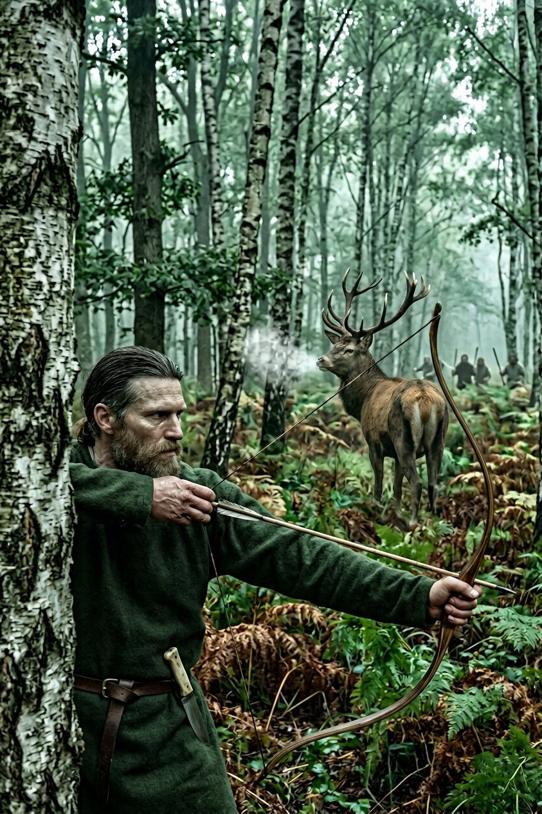
The stag was taken. The record gives the object as achieved and gives no circumstance, and I will give the one I know: a beast in the trees, four men, a bow at eleven paces, and a great deal of noise afterwards from two hundred men who had been sitting in wet bracken since before dawn for exactly that purpose.
I have wondered, in the years since, whether he went hunting because he was already ill and knew it and wanted one thing that year which was entirely his own and hurt nobody. I have no evidence. I am the smith. I put it here as a question with no answer, because this book has by now learned to print those.
Now the other thing, since I have said I would write it plainly and not leave a gap.
On the twentieth day of the eighth month of 895, in the camp below Vidin, I was caught in flagrante with the giant Gavril, by four men of the company, in a wagon, in the middle of the afternoon.
I am forty-five, I am unmarried, I have been in this company since 879, and I have never once in fifteen years explained a private thing to a public book.
So here is the whole of the explanation I intend to give. He was a large, cheerful, uncomplicated man who liked me and said so, which is more than most of the men in this company have managed, and I am not sorry and I am not going to write an apologia for it in a chronicle.
The company made what companies make of that, which is a joke that lasted a fortnight and a nick-name that lasted two years. Athanasios was unbearable for a month. The Captain said nothing at all, which after fourteen years I took as the highest available compliment, and which I now think was simply that he was ill and had other things to think about.
Gavril left the company in 897 at Naumburg and I did not go with him and he did not ask. I have not seen him since. That is everything.
On the twenty-sixth day of the eighth month, in the same camp and the same week, the younger Ana — the Ana who is alive, the one who was never in irons — sat down with Tokifusa and shared her learning with him. The record notes it, in one line, between the hunt and the illness.
Tokifusa is sixty-four in that year. He has been the Captain's friend since the third chapter of this history and he is Infirm and he has been Infirm for years, and he took the lesson from a woman thirty years younger than himself in a wet camp below Vidin while the Captain lay in a tent with a fever.
I put that line next to my own paragraph on purpose. A book that only records the great occasions is a book that has decided in advance what matters, and this company kept its learning alive in a wagon in the rain, and somebody had better write it down.
Savona, and what a liberty war wins
In the ninth month of 895 he went to the Grand Tournament at Savona, on the Ligurian coast, hosted by a Count Pio, and he went ill.
He travelled by Bijeljina and Montagnana, which is a long way round for a sick man, and he improved his equipment twice on the road — the record counts that, and I have priced both of those purchases and they were worth the money and I still say the second one was vanity — and he arrived at Savona before the winter and lost most of the winter to a fever in a hired house with two of our men outside the door.
I was not with him. I was with the regiments, and the regiments were at Glavacioc.
Here is where I have to be careful again, because it is the sort of thing a book can lie about very easily and be thanked for. In the eleventh month of 895, at Glavacioc, two thousand two hundred and twenty-four of ours fought one thousand and eight of Gavril's — Gavril the younger, Adelina's husband, the man of Muntenia — and all of his were lost and four of ours.
The Captain was not on that field. He was four hundred miles away in a hired house in Liguria with a fever, and the army fought it, under its own officers, with his name in the orders and not his horse in the line. The record does not distinguish and this book does: it was our army's victory and not his, and the men who won it won it, and I am not going to give an absent man the credit for a fight he was not in.
Four of ours. I have the names. One of them was a boy from Velbazhd who had been in the company eleven weeks.
In the first month of 896, on the ninth day, he won the melee at Savona.
He was forty-five, he had been ill for five months, and he went into the melee of a great tournament and won it. That is the sort of sentence that a smith should not be able to write about a man she has watched be carried off a field, and it is true, and I have come to understand in these years that the men who are good at this are not the ones who do not break, because everybody breaks. They are the ones who break early and mend fast, and he had already shown me the mending in Rome in 893 and I had not understood it.
He came back from Savona in the second month of 896 and the war of his own ended in that same month, on the twentieth day, with a victory.
The record used to say that the revolt failed and Adelina still held Muntenia, and that was a mistake in the record, and it has been corrected, and it is worth the reader understanding why the mistake was possible, because the correction is the most interesting thing in this volume.
In a liberty war the ruler keeps her title. Adelina is still the ruler of Muntenia in the fourth month of 898 as I write this, and she will be after I have stopped. What the faction won is not a crown; it is a limit. The vassals who rose against her were granted their liberties, she governs them under constraint, and the whole vast machinery of a country continues exactly as before with one screw turned in it.
So: he did not become a prince. There is no county in this book with his name on it and there will not be. He took up other men's cause, declared the war himself, won every field of it, and the settlement was that a woman in Muntenia now has less power than she had.
I have been asked by the smith to write one page, and I have chosen this one, because she has written the truth plainly and a plain truth about a law is the kind of thing a clerk can make clearer.
A liberty faction is a league of vassals who find their lord's hand too heavy. They may take up arms lawfully, and having done so they may call in whom they choose. What they win, if they win, is not the lord's title: it is a charter of limits — the lord keeps the country, and the country's great men keep their rights against the lord. In this case the lord keeps Muntenia and her husband and her rents, and the vassals keep the right to be consulted, which is worth more than it sounds in a country of that size, and is worth nothing at all in a country where the lord is stronger than the charter.
Which is why the war was won by the man who made the charter enforceable: two thousand men of ours on the ground while the bishop read it, and no other reason.
Nor does a victory of this kind have a field. There is no day on which the last of us goes home from it, and no castle to hand to anybody, and no prisoner to ransom. There is a reading, and a copy to every party, and a fee paid, and an army that comes out of the country it freed and goes looking for the next contract, because an army freed nobody of its own condition.
I have counted the whole of it in the ledger, and the Liberty War cost us eleven months of marching and fourteen men, and returned one thousand and forty gold above its costs. It is the least profitable war this company has fought since 885 and it is the one I would keep if I had to burn the rest of the book.
Barcaság, and the thinning of the roll
In the third month of 896, on the twenty-fourth day, the company took a contract for Barcaság for Margaréta, who was born in 872 and was twenty-four that year, against Simeon, the king of the Wallachians — the same king whose army this company destroyed at Ploiești in the tenth month of 890.
It was won in the sixth month of 897, and there was no battle of ours in it worth the name, and I want the reader to notice how often that is true. We took the contract and we went and stood on the ground and the war was won by the standing, which is the most common kind of victory in the record and the one nobody paints.
Feodosia lost at Székelyudvarhely in the fifth month of 897, on Margaréta's side of that war — Feodosia, who had been our prisoner since the eleventh day of the seventh month of 891, and who was now an enemy of our client and fighting in the field.
Which brings me to the two things this section is for, and I have been dreading both of them since I took up the pen.
The first is that the old company began to die.
On the eleventh day of the fourth month of 896, Nawang died of old age, aged sixty-four.
He had been on the roll since its first page in the tenth month of 879, which is to say since before there was anything for this book to be about. A tactician, and the record's words for him are Fragile Bones and Clouded Eyes, which are the words of a man who could not see far and could not carry much and who had taught this company how to choose ground for seventeen years. He was a pilgrim. He was a flagellant. He walked when he could have ridden and he prayed when he could have slept, and he had been in every camp of ours from the Okhotsk coast to Rome.
He died in a bed at Veria in the spring, of nothing in particular, at sixty-four, and the game recorded it as the death of a friend, and the game does not lie about that word.
Thirteen days later, on the twenty-fourth day of the fourth month, Casna died, aged eighty-six.
Eighty-six. She had joined the company about 889, when she was already in her eighties, and she was the oldest person in it by twenty years, and the record's own text for what killed her is broken and reads, in the translation the clerks made, that she died of being someone.
I am not going to make a cause for her. She was old — the record says Infirm and Ill, and both of those are words for the end, and at eighty-six a death does not need a reason; it needs a warm room and a priest and the grace to take it quietly, and she had the first two.
But the game's broken line is the truest thing in the record and I am going to say why. A woman of eighty-six who is in a company of two thousand men at Veria in 896 died, in the only sense the record can compute, of being someone: she had been alive so long that her death could not be prescribed to anything, and the machine that counts causes had run out of causes. That is what it looks like when a roll gets old. The causes get vague. The names stay sharp.
Two in thirteen days. The company buried them both at Veria and Litovoi joined us there in that same month, born 875, twenty-one years old, and Isidoros and Ioan joined at Nikopolis in the fifth month, and if you want to know what the record of a company looks like at its middle, it looks exactly like that: two old names out and three young ones in, in a fortnight, in the same line of the same page.
I want to write that squarely, because the reader has come a long way with the names of 879 and I am not going to pretend it does not cost something to see them go.
Tokifusa is still with us. He is sixty-five in this year and he is Infirm and he does not ride, and he keeps the ledger of the Captain's letters in a hand that is getting worse every season. The younger Ana teaches him. Somebody in this company decided, at some point, that a man of sixty-five who cannot ride should be taught things, and I know exactly who decided it, and he never once said it in a way anybody could write down.
Eight months of water
From the fourth month of 896 to the third month of 897 the company was at sea, and on the water, and on the roads between water, and the record gives it as a list of ports with no reasons attached to any of them.
I will give the list because a list is what there is. Karytaina, in the Peloponnese, in the fifth month. Zugdidi, in Georgia, in the seventh, by way of Corinth and the Bosporus. Back across the Black Sea to Trikala, in Thessaly, in the ninth. To Batumi, in Georgia, in the tenth. To Avlonas in the twelfth. Overland to Colonea, in Anatolia, by the sixteenth day of the third month of 897. And home to Brysis, in Thrace, in the spring.
Eight months, five of them on shipboard with two thousand men and eleven hundred horses.
I have been asked — by Chrysogonos, who asked it mildly, and by men in wine shops since, who asked it with an eyebrow — what the purpose was. I do not know. Nobody in the company knew at the time and nobody has told me since. There are two ways a company goes to Georgia: it is paid, or it is running. We were not running; we had a war of our own behind us that we had won and a client in Barcaság waiting, and there was money coming in from somewhere for eight months of voyages.
So it was paid work, and what the work was is not in the record, and I am the last person in this company who would invent a contract. The book prints the sea and the ports and the men who came back, and leaves the parchment out of it, and the reader may put whatever he likes in the gap.
What I will give instead is what I know of that year, which is the ship.
Two thousand men will not fit in a ship. They fit in eleven ships, badly, in succession, in relays, with the horses in the worst of them and a smell that I could recognize in the dark at a hundred paces for the rest of my life. I mended mail on a deck in the twelfth month of 896 with the sea going over the rail every third wave, and I have never in fifteen years been colder, and I have been cold in Okhotsk in the winter of 866 when there was ice in the water-butt.
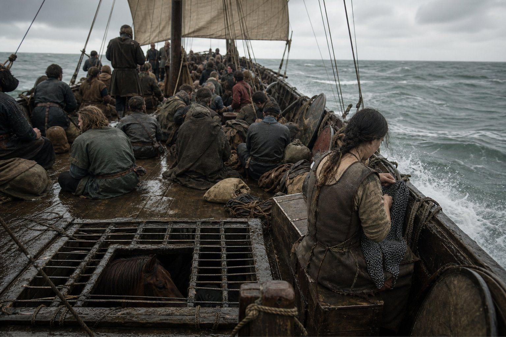
There is a thing that happens to a company on the water which does not happen on land, and it is worth a paragraph because it is the only new thing I learned in these five years. On land the company is a shape: van, main, rear, the wagons in the middle, the forge behind. On the water it is a cargo. Men who have known their place in a line for seventeen years cannot find it on a deck, and a great many of them discovered in those eight months that their whole standing in the company was standing, and that a man without a road under him is only a man with a knife.
The Captain was different on the water, and I watched it and I have thought about it since. He was better. On land he is always somewhere in the middle of a thing he has planned; on a ship he cannot plan and cannot ride off, and there was a fortnight in the Black Sea in the tenth month of 896 when he sat on a deck with Tokifusa and a board of squares and played the game every evening with no other object in the world, and I do not think he had done that since Kallipolis.
He was forty-six. He had a book to his name and a war won and four thousand gold in a chest and no county, and he sat on a deck and played board games with a sick man for a fortnight because there was nowhere to ride to.
Ioakim died on the march in the second month of 897, of a minor illness, at the age of sixty. He was never in this company: he was the man who commanded at Orșova in 887 when we broke Gavril's army in an afternoon, and the record notes his death because the record notes everything. I have written him in for one line, because he is the only man in this book who fought us and died in bed, and because I remember his name from a dispatch and no more.
Feodosia, free
In the fourth month of 897 the company took a contract from Thomas the Bald against a peasant rising under a man called Herakleios, around Dyrrachion, and it was won in the eleventh month of that year, and at Avlonas in the ninth month of 897 Konel the Noble destroyed Herakleios's army — one thousand and eighty-seven against one thousand three hundred and seventy-four — with no man of ours on the field.
Konel was our ally in that war. Konel was also the rival the Captain coughed out of the archery at Galați in the sixth month of 891, which is in the second volume, and which I mention here for the pleasure of the thing: a man we cheated out of a prize in 891 was fighting on our client's side in 897 and winning a battle we were paid for and were not at.
Then, on the twenty-fourth day of the fifth month of 897, the company took a contract for Stoenești, for Franjo, against Feodosia.
Feodosia.
She was taken on the eleventh day of the seventh month of 891. The Greek wrote that chapter and gave her a parole, her household and one request, and he wrote that her imprisonment was off-stage and that the book would not invent the night. She was in our keeping when the second volume ended in the sixth month of 893. She was free by the fifth month of 897, in the field, with an army, and she beat our client Franjo at Stoenești in that same month.
How she got out is not recorded. I have asked everyone in this company who could possibly know. I have asked the Captain, once, in a wine shop in 898, and he looked at his cup for a while and said: I let her out. And I said: when. And he said: I do not remember the month, and I do not intend to be asked again.
So that is what the record has and it is all the record has, and it is more than the Greek had. A woman came out of two years of our keeping and went back to being what she was, which is a ruler with an army, and by 897 she was fighting our clients and winning.
I am going to write my own opinion, since this is my book now. I do not believe he let her out for policy. I believe he let her out because he had held a woman in a room for two years and buried another one in a field outside Rome, and a man of forty-six who has done both those things does not need a reason to open a door.
I may be wrong. Nobody has ever confirmed it and nobody ever will.
In the sixth month of 897, at Râmnicu Sărat, three thousand three hundred and twenty-nine of ours fought three hundred and four of Siila's, all of his were lost, and none of ours.
None of ours. There is a battle in this book in which we did not lose a man, and I have set it down here next to the two women I have just written about, and the reader can decide what to do with the coincidence, because I have decided not to arrange my book so that it means something.
Naumburg
In the seventh month of 897 the company went north to Saxony, to the Grand Tournament at Naumburg, which Queen Regelinda held, and this time the record gives the object and the object is Triumph.
Not recreation. That is the word the record uses, and the difference between it and Naumburg is nine hundred miles.
I have watched the Captain go to eleven tournaments and I could tell the reader what he is like at each of them by the state of his kit. At Kallipolis in 886 he was thirty-six and he packed his second-best harness because the first was in the baggage and it was the first great tournament he had entered as a free captain. At Lippe in 889 he won the board and took nothing home and I mended a shirt for him the night after. At Radom in 892 he won the third title and sat in a hall with a chieftain and a purse and did not look at either, and I have that plate in my head and I have never been able to decide whether he was being a bad winner or a tired one.
At Naumburg in 897 he was forty-seven and he was going to win.
He went the long road, through Legnica and Kiskunhalas, and the record says Wayfarer by the tenth month, which is a word for a man who has learned to move a company over ground it has never seen and does not lose more than a tenth of it doing so. It also says that a hundred and twenty men were short on the muster at the end of that road, which is a tenth of a thousand two hundred and not a tenth of two thousand, and either way it is a hundred and twenty men who did not arrive.
In the seventh month, on the twenty-fifth day, Ondrei joined the train.
Ondrei was from Tot'ma, born 875, twenty-two years old. He was the son of Siila — the Siila whose army we had destroyed at Râmnicu Sărat three weeks before this boy presented himself — and his reasons for being there are not in the record, and I have thought about it more than I have thought about most things in this book.
The record's words for him are Sadistic and Intricate Webweaver. I am not going to unpack that second phrase for a reader; I only ever met the boy a dozen times and each time I had the strong sense of being considered. He was polite. He asked good questions about the horses. He watched the Captain across a fire for nine hundred miles and never once asked him anything that mattered, and I would not have taken him into my forge for a week, and the Captain kept him in the train for the whole of the north and brought him home.
That is either the most foolish thing in this book or the coldest. I have known the man nineteen years and I still cannot tell you which.
The wrestling was in the eleventh month and the twelfth, and the record has it in the order a champion's record has these things.
On the seventh day of the eleventh month he beat Count Arnoul in the quarter-final. On the nineteenth he beat Captain Jaromir in the semi-final. The other semi-final left a Zhrets Dalimir, so it was Dalimir he met on the second day of the twelfth month, and he beat him, and he was forty-seven years old, and there is no man in this book who has won a great tournament's wrestling at that age.
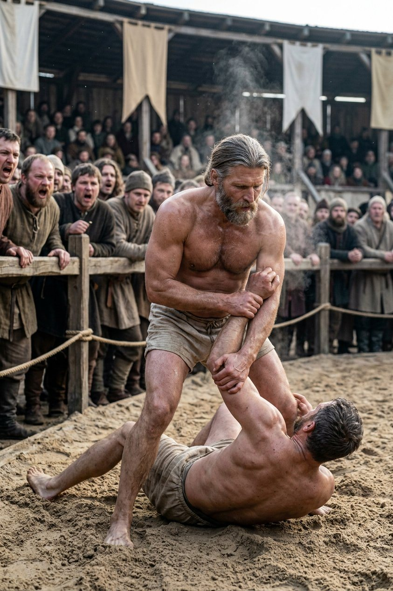
I want to write about the wrestling properly, because the battles in this volume have taken up a great deal of the page and the wrestling is the thing that will be remembered.
It is not a game. A melee is a game; men are rebated and the protocols hold. Wrestling is a bout, and a bout at a great tournament is the nearest thing to a killing that a paying crowd will get, and men of forty-seven do not enter it as a rule. They enter it when they have a point to make and no other way of making it.
Two thousand men in the company. Fifty-five regiments' worth of army by the spring, half of it new, a war of his own won and a client in Barcaság and a chest of gold that a mule could not carry. And a man of forty-seven went into a ring in Saxony in the twelfth month and put three men on their backs in front of a queen, one of whom was the champion of a Teuton household, and did it while he was recovering from a fever that had lasted eight months a year before.
He did it, I think, because a company is a thing that is always about to stop believing in its captain. Men join; men leave; the old men die and the new men have not seen what the old men saw. In 896 two of the roll's first names had died within thirteen days, and the boys who came in at Veria and Nikopolis had never seen the Captain do anything but sign things and be ill.
So he went to Saxony and wrestled, and I do not believe he did it for the purse or the queen or the record's word Triumph. I believe he did it because a great many young men needed to be able to say they had seen it.
On the twenty-sixth day of the eleventh month, between the semi-final and the final, Aghsartan the Bearded died at Naumburg of a heart attack, aged seventy-five.
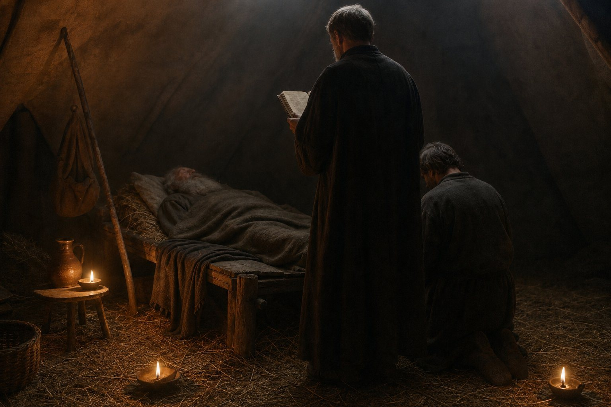
Aghsartan had been on the roll since the tenth month of 879, the same page as Nawang and Kurumpruhoda. He was a wise man; the record's words are zealous and devoted and both of them are meant. He had a hundred and twenty-four lines in the record of this company, which by the clerks' count makes him one of the most present names in the whole of it — more present than some of the men who commanded armies.
He was at Okhotsk. He was at the storm. He was on every road in this book, from the Sea of Okhotsk to the hills above Vidin, and he died in a tent in Saxony between a wrestling semi-final and a wrestling final, and the Captain went into the ring the next week anyway.
I heard him asked about that, in the winter, by a young man who meant it as a compliment. And he said: he would have been in the third row shouting, and if I had sat in the tent he would have had nothing to shout at.
There is no lie in that and there is no comfort in it either, and it is the truest thing anybody said in the whole of 897.
The way home, and the count of 898
We came home by Legnica, and on the second day of the first month of 898, on the road, Kurumpruhoda died of apoplexy, aged fifty-seven.
The third of them. Nawang in the fourth month of 896, Aghsartan in the eleventh of 897, Kurumpruhoda in the first of 898 — three of the men who had been on the roll's first page since the tenth month of 879, dead in twenty-one months, and Casna and the prisoner Ana before them.
Kurumpruhoda was a drunkard and a pilgrim both, which is a combination this book has not had before and will not have again, and he had walked to Jerusalem at some point in the eighties and had come back and drunk his way across Anatolia. He died in a village inn on the road home, in the winter, three days short of the muster, and the company buried him where he fell, which is what happens to a man who dies on a road.
I said in the fourth month of 896 that the roll was thinning and I have written three more deaths since I said it. Tokifusa is sixty-six and Infirm. Matako — I — am still here, and so is the Captain, and Yehudis, and perhaps a dozen others of the old company, and the rest of the fifty-five names on that roll are men and women who came after 890 and who think of the winter of 866 as something the old ones talk about.
That is what a company is at the end: a legend that a dozen people remember and two thousand people repeat.
Kiskunhalas in the second month. Giurgiu in the third. And on the tenth day of the third month of 898, Tabla Buțbii.
Tabla Buțbii is Adelina's. It is Muntenia. It is the country he declared a war against in the sixth month of 894 and freed in the second month of 896, and he came back into it in the spring of 898 with eleven regiments of each kind and four thousand three hundred gold, and there is not one acre in it that is his, and not one man in it owes him a thing except the parchment of 896, which the vassals of Muntenia keep in a chest and take out when their lady's hand gets heavy.
In the fourth month of 898, Iacob left the company.
Iacob had been with us since 892. He was a Wallachian with a good horse and no letters, and he was fifty-seven when he joined and sixty-one when he left, and he left alive, which is more than most of this book can say of a departure.
But Iacob is the oldest thread in the whole record, and the reader should know why. In the second month of 869 a daughter of his was born, and her name was Monica, and that birth is the first entry in the record of this world — the first line of the whole thing, twenty-nine years before the last. Everything in fourteen chapters of this history stands between a man's daughter being born in 869 and the same man, at sixty-one, walking out of a company in Muntenia because he chose to.
He did not say why. Nobody asked him in the way that would have got an answer. He took his horse and his share and went south, and the Captain shook his hand at the gate and watched him go and said, when he came back in: that is the last of the old road.
And on the twenty-fifth day of the fourth month of 898, at Stoenești, the company fought Siila again.
Two thousand two hundred and twenty-five of ours. Two hundred and ninety-eight of his. All of his lost. None of ours.
That is the last action in this book. It is not a great battle and no one will sing about it; it is a small war in a corner of a country against a man whose son was eating at our fires six months before, and it is still running as I write, and it will go on running after I have tied the boards on this volume.
Here is the count, which is the last thing the record gives and the last thing this book will print.
Fifty-five companions. That is up from fifty-one in 893, and down by five deaths. Fifty-five regiments of the army, eleven of each of five kinds, four thousand four hundred men at full strength and two thousand one hundred and ninety-six present — half of it new, half of it filling. Four thousand three hundred and ninety-one gold. Eighteen thousand nine hundred and eighty-three in prestige, whatever that is worth in the world outside a ledger. Thirty-five thousand two hundred and eighty-six in piety, which is a number I have copied faithfully for fifteen years and have never once understood.
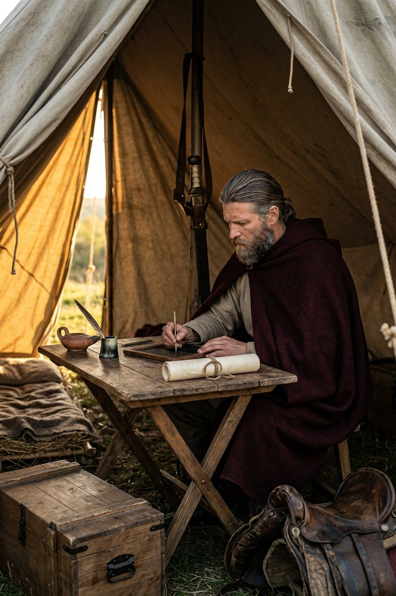
And no land. No title. No wife. No child. Not one thing in that count except money and men and a reputation that can be spent in exactly one way.
I have been asked, twice, since I began this volume, what I think the whole of it amounts to. I am the smith and I am not a philosopher, so I will give the answer in the only terms I know.
I have mended this company's iron for nineteen years. I have mended mail that was made before I was born and I have mended mail that was made in the spring of the same year, and I know what a thing is worth by what it costs to keep in repair. This company cost two thousand two hundred men their lives and it took eleven counties and gave away all eleven, and it made a duke at Vidin and unmade a count at Visegrad, and it broke the armies of three kings and lost the wars of two of them, and it won a war of its own against a woman who still rules her country and wrote a limit into her law and called that a victory.
And its captain is forty-eight years old, in the fourth month of 898, in a camp at Stoenești in the country he freed, with a wax tablet in his hand, and he is writing this down.
I know what he is writing because I asked him. He is writing the names of the dead of 879 through 897, in order, with the year of each, on one tablet, and when it is full he will copy it into the roll, and when the roll is full he will start another.
The record ends on the twenty-fifth day of the fourth month of 898, which is the last save, and which is a thing I do not expect the reader to understand and will explain anyway: this history is a translation of a record that a machine keeps, and the machine stopped on that day in that month with a company of two thousand two hundred and twenty-five men standing in a field in Muntenia and a war still running.
Which means this book has no ending. It has a last entry.
Fourteen chapters. Nineteen years. One hundred and thirty-four plates. A boy on a ship out of Naniwa with a father's letter and no name of his own, and a man of forty-eight in a camp in Muntenia who has a name that four counts and two kings know, and no county, and no son, and a chest of gold, and two thousand men who would follow him for pay and most of them for nothing.
I have written my volume and the Greek has written his and the first one is in the Captain's own hand, and if anybody ever reads all three of them together I hope they notice the one thing that has not changed in nineteen years, which is that every single time this company has been asked to stand somewhere, it has stood there.
That is not a small thing to be able to say about a trade I have spent my whole life in.
The boards are cut. The glue is setting. The last thing I will write on the cover is the year, and the year is 898, and the record stops in the fourth month of it with the war still running, and it will go on running, and somebody else will have to write what happened next.